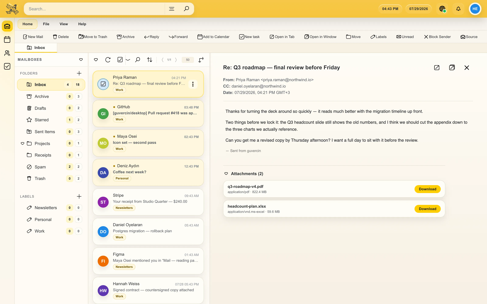
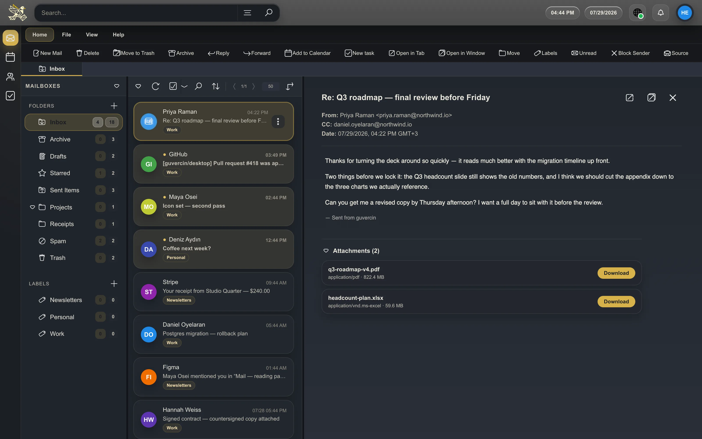
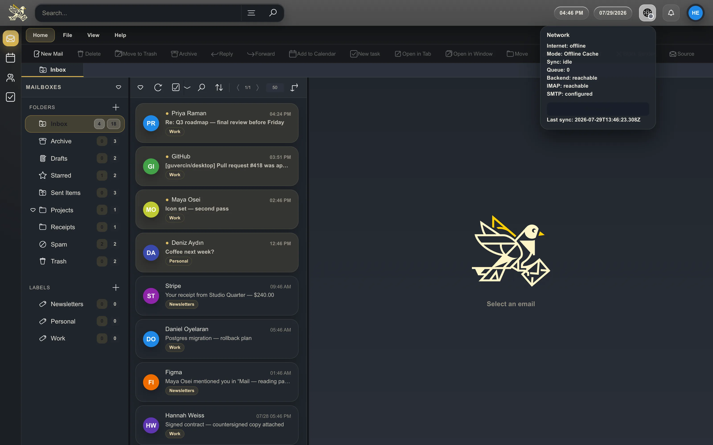

v0.1.0 · ücretsiz ve açık kaynak
gelen kutun, kendi masaüstünde
macOS, Windows ve Linux için ücretsiz ve açık kaynak bir e-posta uygulaması — takvim, kişiler ve görevler de içinde. postan bizim değil, senin makinende durur.
sonsuza dek ücretsiz · hesap gerekmez · takip yok · GitHub'da incele


- %100 açık kaynak
- reklam yok, takip yok
- her IMAP hesabıyla çalışır
- 64 dil
- macOS, Windows ve Linux
neler var
bütün hesapların tek yerde
istediğin kadar IMAP ve SMTP hesabı ekle, ya da tek tıkla Google ile giriş yap.
postadan fazlası
aynı pencerede bir takvim, bir adres defteri ve bir görev listesi.
tasarımı gereği özel
iletiler bilgisayarındaki şifreli yerel bir veritabanında durur; hiçbir şey bize yüklenmez.
senin kalır
açık kaynak, sonsuza dek ücretsiz, abonelik yok ve yükseltilecek bir şey yok.
kurulum yok, hesap yok
indirmeden önce guvercin'i dene
canlı bir sürüm tarayıcında çalışıyor; diskine hiçbir şey koymadan posta görünümünü, takvimi ve ayarları gezebilirsin.
asıl olan masaüstü uygulaması — bu sadece önce bir göz atmak için.


masaüstü uygulaması gibi çalışan e-posta
sıralamasını değiştirebildiğin tam bir klasör ağacı, kapatabildiğin sohbet görünümü ve gerçekten okuduğun yere taşıyabildiğin bir okuma bölmesi. tema ve yazı boyutu hesap başına hatırlanır, yani iş hesabın kişisel hesabına hiç benzemek zorunda değil.
arama yerel veritabanı üzerinde çalışır; yani sinyalin olmadığı bir trende de çalışır. ekleri ve satır içi görselleri de öyle.
postanı biz okuyamayız, başkası da okuyamaz
bir guvercin bulutu yok. uygulama bilgisayarından doğrudan kendi sağlayıcına bağlanır ve tuttuğu her şey — iletiler, taslaklar, ekler, takvim etkinlikleri, kişiler, görevler — diskindeki yerel bir veritabanında durur. telemetri yok, çökme raporu yok, reklam yok ve zaten açılacak bir hesap da yok.
satacak bir şeyimiz yok, çünkü hiçbir şey almıyoruz.
ilk sorulan sorular
guvercin gerçekten ücretsiz mi?
evet. ücretsiz ve açık kaynak; abonelik yok, ücretli sürüm yok, yükseltilecek bir şey yok. yapamayacağın tek şey onu satmak.
hangi e-posta sağlayıcıları çalışıyor?
IMAP ve SMTP konuşan her sağlayıcı — Gmail, Outlook ve Hotmail, Yandex, iCloud, Fastmail, üniversiten, kendi sunucun. Google hesapları tek tıkla giriş yapabilir.
postam nerede saklanıyor?
kendi bilgisayarındaki yerel bir veritabanında. hiçbir şey sunucularımıza ulaşmaz, çünkü sunucu diye bir şey yok.